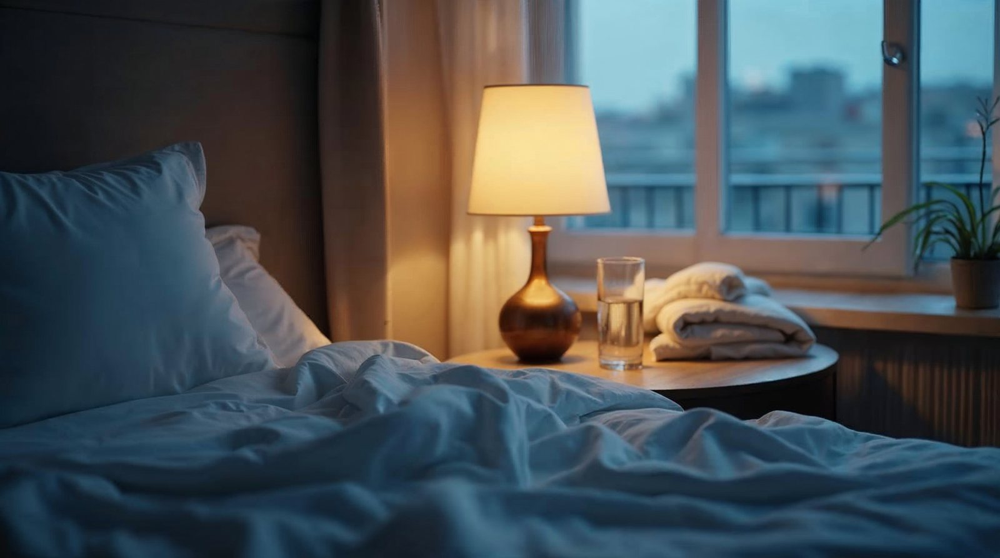
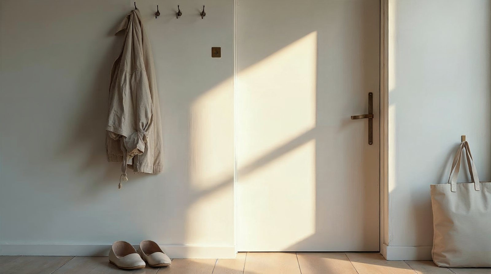
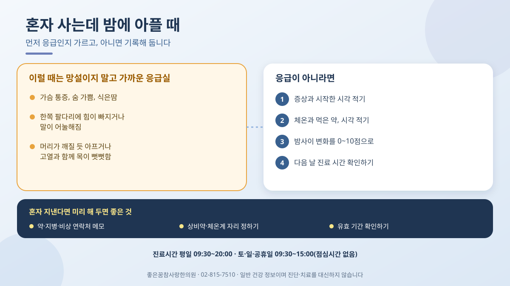

이종호 한의사 감수좋은꿈참사랑한의원 대표원장 (한의사 면허번호 19769)발행 2026-11-24 · 수정 2026-11-26
이 글의 차례
- 왜 이런 불편이 생길 수 있나요
- 왜 밤이 되면 같은 불편도 더 크게 느껴질까요?
- 혼자 지내는 밤에 흔히 겪는 불편은 무엇일까요?
- 밤사이 지켜볼 때는 무엇을 차례로 볼까요?
- 먼저 이렇게 여쭙니다
- 일상에서 먼저 해 볼 수 있는 것
- 혼자 사는 집에 미리 챙겨 둘 것은 무엇일까요?
- 상비약을 드실 때는 무엇을 살필까요?
- 밤사이 기록은 이렇게 남겨 보세요
- 속이 더부룩한 밤에는 무엇을 해 볼까요?
- 목과 허리가 뻐근해 잠들기 어려운 밤에는
- 감기 기운이 있는 밤에는 어떻게 지낼까요?
- 상황별 예시
- 아침이 되면 무엇부터 할까요?
- 밤을 설친 다음 날은 어떻게 보낼까요?
- 평소 생활에서 밤의 불편을 줄이려면 어떻게 할까요?
- 마음까지 불안해질 때는 어떻게 할까요?
- 미리 정해 두면 좋은 연락 약속
- 어르신이 혼자 지내신다면 가족은 무엇을 도와드릴까요?
- 끼니가 흔들리는 주에는 어떻게 먹을까요?
- 이사 온 첫 달이라면 무엇부터 알아 둘까요?
- 스스로 점검해 보세요
- 한의원에서 함께 살필 수 있는 경우
- 다음 날 한의원에 오시면 어떻게 진행되나요?
- 다음 날 바로 오시기 어렵다면
- 이렇게 기록해 오시면 상담이 쉬워집니다
- 이런 증상은 먼저 확인이 필요합니다
노량진과 상도동에는 원룸에서 혼자 지내는 수험생, 직장인, 어르신이 많습니다. 밤늦게 몸이 아프면 이 정도로 응급실에 가도 될지 망설이게 됩니다. 미리 판단 기준과 준비물을 정해 두면 당황하지 않고 움직일 수 있습니다.
왜 이런 불편이 생길 수 있나요
- 혼자 지내면 증상을 말해 줄 사람이 없어 심각한 정도를 스스로 가늠하기 어렵습니다.
- 밤에는 피로와 걱정이 겹쳐 통증이 더 크게 느껴지기도 합니다.
- 끼니를 거르거나 편의점 음식으로 때우는 날이 이어지면 소화 불편과 기운 저하가 쌓이기 쉽습니다.
- 상비약과 체온계가 어디 있는지 몰라 대처가 늦어지는 경우가 많습니다.
왜 밤이 되면 같은 불편도 더 크게 느껴질까요?
낮에는 일과 사람, 바깥 소리가 주의를 나눠 가져가 몸의 작은 불편을 덜 느낍니다. 밤이 되어 방이 조용해지면 신경이 온통 몸으로 쏠려, 같은 뻐근함도 훨씬 크게 다가옵니다.
피곤한 날일수록 통증에 예민해지고, 걱정이 걱정을 키우기도 합니다. 그래서 밤에는 지금 느끼는 크기만으로 판단하기보다, 시간이 지나며 어떻게 달라지는지를 적어 보는 것이 도움이 됩니다.
혼자 지내는 밤에 흔히 겪는 불편은 무엇일까요?
밤에 아프다고 해서 모두 급한 것은 아닙니다. 혼자 사는 분들이 다음 날 진료실에서 이야기하시는 밤의 불편은 생활에서 비롯된 경우가 많습니다.
- 자정 넘어 야식을 먹고 누웠더니 명치가 더부룩하고 트림이 잦은 경우
- 하루 종일 앉아 있다가 누우니 목과 허리가 뻐근해 자세를 자꾸 바꾸게 되는 경우
- 오랜만에 운동한 날 새벽에 종아리에 쥐가 나 잠에서 깨는 경우
- 으슬으슬 춥고 목이 칼칼해 감기 기운이 느껴지는 경우
- 걱정이 꼬리를 물어 잠이 오지 않고 몸까지 뻣뻣해지는 경우
이런 불편은 지금 무엇을 해 볼 수 있는지, 아침까지 무엇을 지켜볼지 정해 두면 훨씬 덜 막막해집니다. 다만 혼자 판단하기 어려운 날도 있으니, 기록을 남겨 두고 다음 날 꼭 이야기해 주세요.
밤사이 지켜볼 때는 무엇을 차례로 볼까요?
혼자 있으면 머릿속이 복잡해져 무엇부터 봐야 할지 놓치기 쉽습니다. 저는 다음 네 가지를 순서대로 보시라고 말씀드립니다.
- 처음 겪는 불편인지, 전에도 비슷한 일이 있었는지 떠올려 보기
- 체온을 재고 그 시각을 적어 두기
- 오늘 먹은 음식, 한 일, 먹은 약을 차례로 떠올려 보기
- 30분쯤 지나 불편이 커지는지, 그대로인지, 줄어드는지 다시 점수로 적어 보기
전에도 야식 뒤에 같은 더부룩함을 겪었고 시간이 지나며 줄어든다면 조금 마음을 놓고 지켜볼 수 있습니다. 처음 겪는 낯선 느낌이라면 혼자 참기보다 가족이나 친구에게 먼저 알려 두세요.

먼저 이렇게 여쭙니다
- 증상이 언제부터 시작되었나요?
- 열이 나거나 통증이 점점 심해지고 있나요?
- 지병이 있거나 드시는 약이 있나요?
- 바로 연락할 수 있는 가족이나 친구가 있나요?
일상에서 먼저 해 볼 수 있는 것
- 복용 중인 약과 지병, 비상 연락처를 휴대폰 메모에 적어 두기
- 상비약과 체온계 위치를 정해 두고 유효 기간 확인하기
- 밤에 연락할 가족이나 친구 한 명을 정해 미리 말해 두기
- 응급이 아니라면 증상과 시각을 적어 두고 다음 날 진료 시간 확인하기
혼자 사는 집에 미리 챙겨 둘 것은 무엇일까요?
밤에 당황하는 가장 큰 까닭은 필요한 물건이 어디 있는지 모른다는 데 있습니다. 작은 상자나 바구니 하나에 아래 물건을 모아 침대 가까운 곳에 두시면 좋습니다.
- 체온계와 여분 건전지
- 약국에서 상의해 고른 상비약과 그 설명서
- 뚜껑 있는 물 한 병과 작은 컵
- 손전등이나 작은 조명, 휴대폰 충전기
- 복용 중인 약과 지병을 적은 종이 한 장
계절이 바뀔 때마다 상자를 한 번 열어 상비약 유효 기간과 체온계 건전지를 확인해 보세요. 이사 직후라면 짐 정리보다 이 상자를 먼저 꾸려 두시길 권합니다.
상비약을 드실 때는 무엇을 살필까요?
혼자 있는 밤에는 약을 먹고도 무엇을 언제 먹었는지 잊기 쉽습니다. 감기약과 진통제에 같은 성분이 함께 들어 있는 경우도 있어, 두 가지를 겹쳐 드시기 전에 포장에 적힌 성분을 확인해 주세요.
평소 드시는 약이 있다면 함께 먹어도 되는지 약 설명서를 보거나 낮에 약사에게 미리 물어 두세요. 병원에서 처방받은 약은 스스로 늘리거나 끊지 마시고, 술을 마신 날에는 약을 드시기 전에 더 조심해 주세요.
밤사이 기록은 이렇게 남겨 보세요
기록은 길 필요가 없습니다. 휴대폰 메모장에 시각, 불편한 곳과 점수(0~10점), 한 일만 짧게 적으시면 됩니다.
- 23:40 명치 더부룩 5점 / 따뜻한 물 몇 모금, 상체 높여 누움
- 00:20 4점 / 체온 36.8도
- 01:10 2점 / 잠듦
이렇게 남겨 두면 다음 날 진료실에서 기억을 더듬지 않아도 되고, 불편이 어떤 흐름으로 지나갔는지 한눈에 볼 수 있습니다.
속이 더부룩한 밤에는 무엇을 해 볼까요?
먹고 바로 누우면 속이 더 답답해지기 쉽습니다. 30분쯤은 등을 기대고 앉아 쉬고, 허리띠나 꽉 끼는 옷은 풀어 두세요. 누울 때는 베개를 높여 상체를 조금 세우면 편하다는 분이 많습니다.
따뜻한 물을 몇 모금 천천히 마시고, 손바닥을 비벼 따뜻하게 한 뒤 배 위에 가만히 올려 두는 것도 마음을 가라앉히는 데 도움이 됩니다. 다음 날 아침은 거르지 말고 죽처럼 가벼운 음식으로 시작해 보세요.
목과 허리가 뻐근해 잠들기 어려운 밤에는
하루 종일 앉아 있다 누웠는데 목과 허리가 뻐근하다면, 따뜻한 물로 짧게 샤워해 몸을 데운 뒤 누워 보세요. 베개는 목 뒤를 받쳐 주는 높이로 맞추고, 바로 누울 때는 무릎 아래에 쿠션을 하나 넣어 보세요.
누워서 휴대폰을 보려고 엎드리거나 고개를 한쪽으로 꺾는 자세는 뻐근함을 더하기 쉽습니다. 잠들기 전에는 휴대폰을 내려놓고 어깨를 천천히 돌리며 숨을 고르세요.
감기 기운이 있는 밤에는 어떻게 지낼까요?
으슬으슬하다면 두꺼운 이불 하나보다 얇은 옷을 겹쳐 입어 몸에 맞게 벗고 입을 수 있게 하세요. 땀에 젖으면 바로 마른 옷으로 갈아입고, 따뜻한 물을 자주 조금씩 드세요.
방이 너무 건조하면 목이 더 칼칼해지니 젖은 수건을 걸어 두는 것도 방법입니다. 다음 날 일정은 할 수 있는 만큼 줄여 두고, 체온은 자기 전과 일어난 뒤 두 번 재어 적어 두세요.
상황별 예시
- 예를 들어 노량진에서 혼자 지내는 수험생이 자정 넘어 컵라면을 먹고 누웠다가 속이 더부룩해 잠을 못 이루는 경우라면, 베개를 높여 상체를 조금 세우고 따뜻한 물을 몇 모금 마신 뒤 30분 뒤의 점수를 적어 보세요.
- 예를 들어 퇴근 뒤 오랜만에 운동하고 잠든 직장인이 새벽에 종아리에 쥐가 나 깬 경우라면, 발끝을 몸 쪽으로 천천히 당겨 근육을 늘이고, 가라앉으면 다리를 따뜻하게 덮은 채 다시 누워 보세요.
- 예를 들어 혼자 사는 어르신이 밤에 화장실에 가려다 허리가 뻐근해 일어나기 힘든 경우라면, 옆으로 돌아누운 뒤 팔로 바닥을 밀며 천천히 일어나고, 침대 옆에 작은 조명을 켜 두세요.
- 예를 들어 감기 기운으로 으슬으슬한 밤이라면, 체온을 재어 적고, 따뜻한 물을 마시며 얇은 옷을 겹쳐 입은 뒤 다음 날 아침 체온을 다시 재 보세요.
아침이 되면 무엇부터 할까요?
밤을 넘기고 나면 먼저 밤사이 적은 기록을 다시 보세요. 불편이 줄었는지, 그대로인지, 새로운 불편이 더해졌는지에 따라 오늘 진료를 받을지 정하기 쉬워집니다.
불편이 남아 있다면 진료 시간을 확인하고 전화나 네이버 예약으로 시간을 잡아 두세요. 아침은 따뜻한 물과 죽처럼 속에 부담이 적은 음식으로 가볍게 드시고, 회사나 학원에는 늦을 수 있다고 미리 알려 두면 마음이 덜 급해집니다.
밤을 설친 다음 날은 어떻게 보낼까요?
밤에 몸이 불편해 잠을 설쳤다면 그날은 일정을 조금 느슨하게 잡아 주세요. 점심 뒤 10~20분쯤 눈을 붙이는 것은 괜찮지만, 오후 늦게 커피를 여러 잔 마시면 그날 밤 잠이 다시 흔들리기 쉽습니다.
저녁은 가볍게 일찍 드시고 평소보다 조금 일찍 잠자리에 들어 보세요. 하루 이틀 리듬을 되찾으면 몸도 마음도 한결 가벼워집니다.
평소 생활에서 밤의 불편을 줄이려면 어떻게 할까요?
혼자 지내면 식사와 잠의 시각이 들쭉날쭉해지기 쉽습니다. 그 흔들림이 밤의 더부룩함, 뻐근함, 잠 설침으로 이어지는 경우가 많습니다.
- 저녁은 잠들기 세 시간 전쯤 마치고, 늦은 시각의 야식은 양을 줄이기
- 하루 한 번은 밖에 나가 20분쯤 걷기
- 잠들기 30분 전에는 휴대폰을 내려놓고 조명을 낮추기
- 겨울에는 침실이 너무 건조하거나 춥지 않게 온도와 습도 살피기
마음까지 불안해질 때는 어떻게 할까요?
혼자 있는 밤에는 몸의 불편보다 불안이 더 힘들게 느껴지기도 합니다. 먼저 방의 불을 켜고, 앉은 자세에서 4초 동안 코로 들이쉬고 6초 동안 입으로 천천히 내쉬기를 다섯 번쯤 해 보세요.
그다음 가족이나 친구에게 지금 몸이 이렇다고 짧게 메시지를 남겨 두세요. 바로 답이 오지 않더라도 누군가 알고 있다는 사실만으로 마음이 한결 가라앉습니다.
미리 정해 두면 좋은 연락 약속
- 몸이 불편한 날에는 가족이나 친구에게 저녁에 한 번 메시지를 보내기로 약속하기
- 일정 시간까지 답이 없으면 전화해 달라고 미리 부탁해 두기
- 내 집 주소와 현관 비밀번호를 알려 줄 믿을 만한 사람 한 명 정해 두기
- 같은 건물에 아는 이웃이 있다면 서로 연락처 나눠 두기
이런 약속은 아플 때 갑자기 만들기 어렵습니다. 몸이 괜찮은 날 미리 이야기해 두시면 서로 부담도 덜합니다.
어르신이 혼자 지내신다면 가족은 무엇을 도와드릴까요?
- 드시는 약 이름과 시간을 큰 글씨로 써서 냉장고나 현관에 붙여 두기
- 침대에서 화장실까지 가는 길에 밤에도 켜져 있는 작은 조명 달기
- 저녁 안부 전화 시각을 정해 두고 그날 몸 상태를 여쭙기
- 계절이 바뀔 때 찾아뵙고 상비약과 체온계를 함께 확인하기
어르신은 밤에 불편해도 자식에게 폐를 끼칠까 봐 말씀을 미루시는 경우가 많습니다. 다음 날 아침 전화로 밤에 잘 주무셨는지 한 번 더 여쭤봐 주세요.
끼니가 흔들리는 주에는 어떻게 먹을까요?
혼자 지내면 바쁜 주에 편의점 음식으로 끼니를 때우는 날이 늘어납니다. 그럴 때도 따뜻한 국물이 있는 메뉴를 고르고, 단 음료 대신 물을 함께 드시고, 삶은 달걀이나 두부처럼 단백질을 하나 더해 보세요.
주말에 장을 볼 때 데우기만 하면 되는 죽이나 국을 몇 개 사 두면, 속이 불편한 밤이나 다음 날 아침에 부담 없이 드실 수 있습니다.
이사 온 첫 달이라면 무엇부터 알아 둘까요?
이사 온 지 얼마 안 된 동네에서는 밤에 어디로 가야 할지 더 막막합니다. 짐을 정리하는 김에 집에서 가까운 약국과 병원, 한의원의 위치와 여는 시간을 지도 앱에 저장해 두세요.
현관에서 큰길까지 나가는 길도 한 번 걸어 두면 좋습니다. 낮에 익혀 둔 길은 밤에 몸이 불편할 때도 덜 헤매게 되고, 그만큼 마음도 덜 급해집니다.
스스로 점검해 보세요
- 체온계가 집 어디에 있는지 바로 말할 수 있다
- 상비약의 유효 기간을 최근 석 달 안에 확인했다
- 복용 중인 약과 지병이 휴대폰 메모에 적혀 있다
- 밤에 연락할 사람과 미리 이야기를 나눠 두었다
- 집 근처 약국이 몇 시까지 여는지 알고 있다
- 저녁 식사를 잠들기 세 시간 전에 마치는 날이 일주일에 절반은 된다
해당하지 않는 항목이 있다면 오늘 하나씩 채워 두세요. 준비가 되어 있으면 밤에 몸이 불편해도 훨씬 차분하게 움직일 수 있습니다.

한의원에서 함께 살필 수 있는 경우
- 응급은 아니지만 근육통, 소화 불편, 잠 설침이 며칠째 이어지는 경우, 이야기를 듣고 살핍니다.
- 혼자 지내며 끼니와 잠의 리듬이 흔들린 경우, 생활 리듬을 함께 정리합니다.
- 필요하면 다른 의료기관 진료를 안내해 드립니다.
좋은꿈참사랑한의원에서는 모든 분께 맥부터 짚으며 밤사이 있었던 증상을 차근차근 여쭙고, 필요하다고 판단되면 혀(설진)를 보거나 초음파로 더 살핍니다. 그 뒤 침·한약 상담 등 맞는 방법을 정하고, 귀가 전에는 혼자 지내며 지켜볼 점을 말씀드립니다.
다음 날 한의원에 오시면 어떻게 진행되나요?
접수 때 기본 정보를 적으시면, 진료실에서는 모든 분의 맥을 먼저 짚고 밤사이 적은 기록을 함께 봅니다. 불편이 언제 시작돼 어떻게 지나갔는지, 그날 저녁 무엇을 드시고 몇 시에 주무셨는지를 차례로 여쭙습니다.
필요하다고 판단되면 혀를 보거나 아픈 자리를 손으로 살피고, 오늘 할 방법과 그 이유를 먼저 설명드린 뒤 진행합니다. 한약 상담이 필요하다면 지금 드시는 약을 확인한 뒤 정하고, 임신 중이거나 그럴 가능성이 있다면 먼저 말씀해 주세요.
혼자 아픈 밤을 보내고 오신 날은 몸보다 마음이 더 지쳐 있는 경우가 많습니다. 진료실에서는 서두르지 않고, 밤사이 있었던 일을 처음부터 천천히 들려주셔도 괜찮습니다.
다음 날 바로 오시기 어렵다면
출근이나 수업 때문에 다음 날 오전에 오시기 어렵다면 평일 저녁 시간이나 주말 진료를 이용하셔도 됩니다. 그사이에도 밤에 적은 기록은 이어서 남겨 주세요. 하루 이틀의 흐름이 모이면 무엇이 불편을 키우는지 더 잘 보입니다.
이렇게 기록해 오시면 상담이 쉬워집니다
- 증상이 시작된 시각과 그때 하고 있던 일
- 잰 체온과 시각, 먹은 약과 시각
- 밤사이 통증이나 증상의 변화(0~10점)
- 평소 앓는 병과 복용 중인 약
이런 증상은 먼저 확인이 필요합니다
- 가슴이 조이듯 아프거나 숨이 찬 경우
- 갑자기 한쪽 팔다리 힘이 빠지거나, 말이 어눌해지거나, 처음 겪는 극심한 두통이 온 경우
이런 신호가 있으면 한의원보다 가까운 병원이나 응급실을 먼저 찾으세요.

여쭙는 것
- 증상이 언제부터 시작되었나요?
- 열이 나거나 통증이 점점 심해지고 있나요?
- 지병이 있거나 드시는 약이 있나요?
생활에서 해 볼 것
- 복용 중인 약과 지병, 비상 연락처를 휴대폰 메모에 적어 두기
- 상비약과 체온계 위치를 정해 두고 유효 기간 확인하기
- 밤에 연락할 가족이나 친구 한 명을 정해 미리 말해 두기
한의원에서 함께 살필 것
- 응급은 아니지만 근육통, 소화 불편, 잠 설침이 며칠째 이어지는 경우, 이야기를 듣…
- 혼자 지내며 끼니와 잠의 리듬이 흔들린 경우, 생활 리듬을 함께 정리합니다.
- 필요하면 다른 의료기관 진료를 안내해 드립니다.
먼저 확인이 필요한 신호
- 가슴이 조이듯 아프거나 숨이 찬 경우
- 갑자기 한쪽 팔다리 힘이 빠지거나, 말이 어눌해지거나, 처음 겪는 극심한 두통이 온…
한눈에 보는 표
| 구분 | 핵심 |
|---|---|
| 여쭙는 것 | 증상이 언제부터 시작되었나요? 열이 나거나 통증이 점점 심해지고 있나요? |
| 생활에서 해 볼 것 | 복용 중인 약과 지병, 비상 연락처를 휴대폰 메모에 적어 두기 상비약과 체온계 위치를 정해 두고 유효 기간 확인하기 |
| 한의원에서 함께 살필 것 | 응급은 아니지만 근육통, 소화 불편, 잠 설침이 며칠째 이어지는 경우, 이야기를 듣고 살핍니다. 혼자 지내며 끼니와 잠의 리듬이 흔들린 경우, 생활 리듬을 함께 정리합니다. |
| 먼저 확인이 필요한 신호 | 가슴이 조이듯 아프거나 숨이 찬 경우 갑자기 한쪽 팔다리 힘이 빠지거나, 말이 어눌해지거나, 처음 겪는 극심한 두통이 온 경우 |
자주 묻는 질문
다음 날 아침 몇 시부터 진료하나요?
평일과 토·일·공휴일 모두 오전 9시 30분부터 진료합니다. 평일은 저녁 8시까지(점심 13:00~14:00), 토·일·공휴일은 오후 3시까지(점심시간 없음)입니다.
밤에 카카오톡으로 물어봐도 되나요?
남겨 두셔도 되지만 밤에는 바로 답을 드리기 어렵습니다. 급한 증상이라면 답을 기다리지 마세요.
응급실에 가야 할지 애매할 때는 어떻게 하나요?
응급 신호가 하나라도 있으면 애매하더라도 기다리지 말고 가까운 응급실로 가세요. 그런 신호가 없고 증상이 가볍다면 시각과 증상을 적어 두었다가 다음 날 진료 시간에 상담하셔도 됩니다.
좋은꿈참사랑한의원은 재진 때 지난번 이야기부터 이어서 여쭙니다. 진료시간과 예약은 오시는 길에서 확인하세요.
어디서 상담받을 수 있나요?
좋은꿈참사랑한의원은 서울 동작구 만양로2길 2 신성빌딩 3층·5층(서울 동작구 상도동, 7호선 상도역 3번 출구 근처)에 있습니다. 한의사 3명(이종호 대표원장, 조영기 수석진료원장, 정원영 진료원장)이 진료합니다. 진료시간은 평일 09:30~20:00(점심 13:00~14:00), 토·일·공휴일 09:30~15:00이며, 방문 전 전화로 확인을 권합니다. 예약은 네이버 예약, 카카오톡 상담, 전화 02-815-7510로 받습니다.
이 글은 일반적인 건강 정보이며 개인의 진단이나 치료를 대신하지 않습니다. 증상이 있거나 복용 중인 약이 있다면 진료를 통해 확인하세요. 치료 효과는 개인마다 다를 수 있습니다.
작성 기준: 일반적으로 알려져 있는 건강 정보를 참고해 정리했습니다(대표원장 감수). 증상 기록은 1~2주 동안 하루 1회, 비슷한 시간에 적어 오시면 지난 상태와 비교하기 쉽습니다.